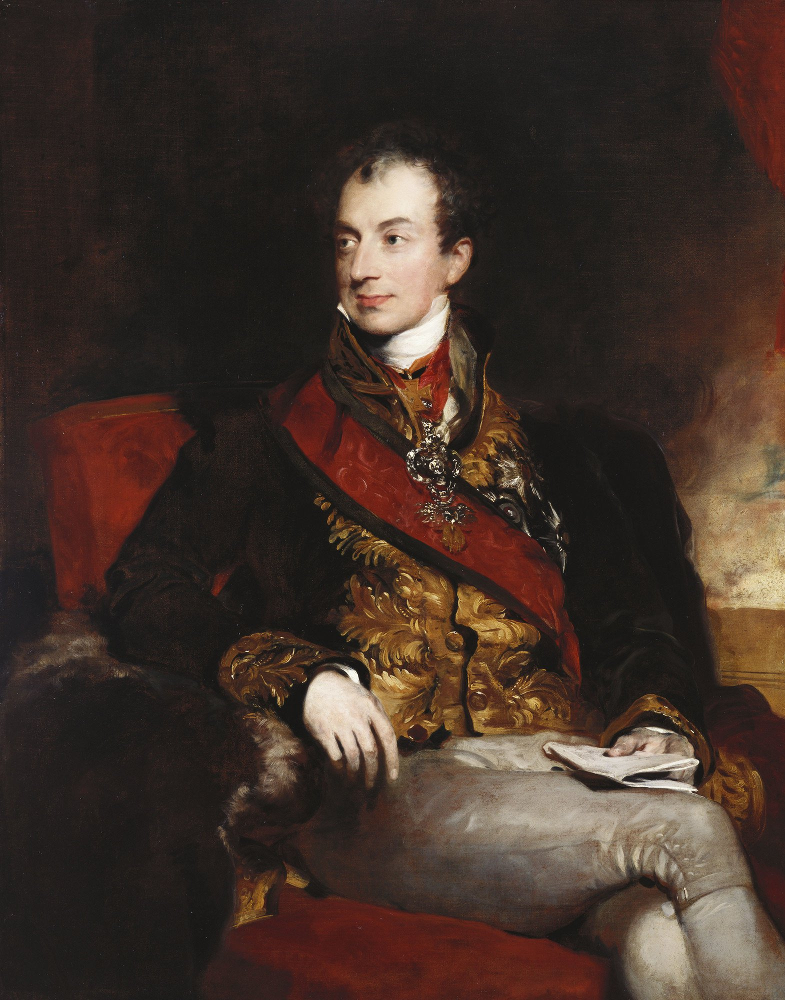
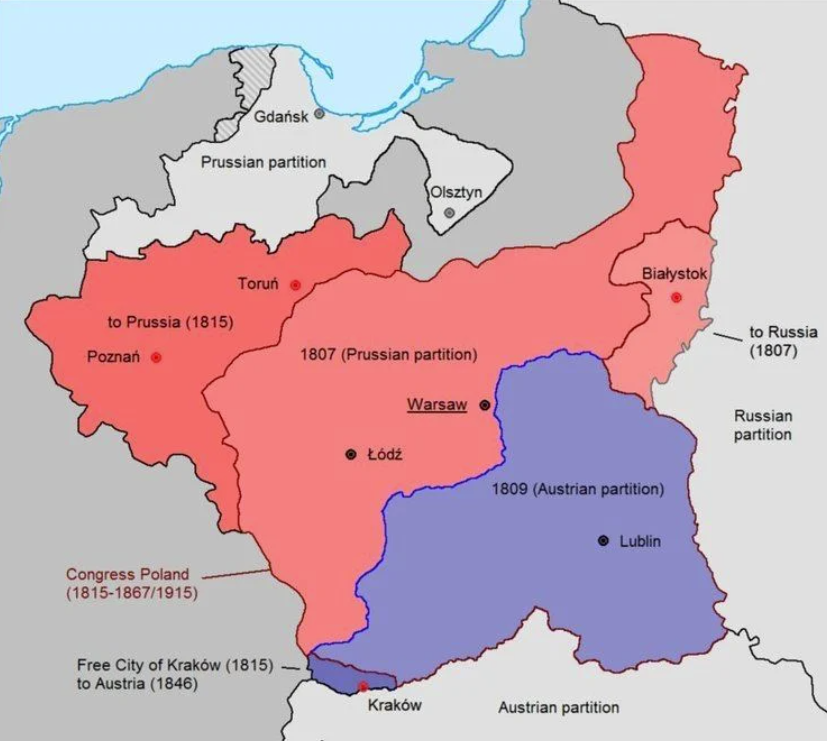
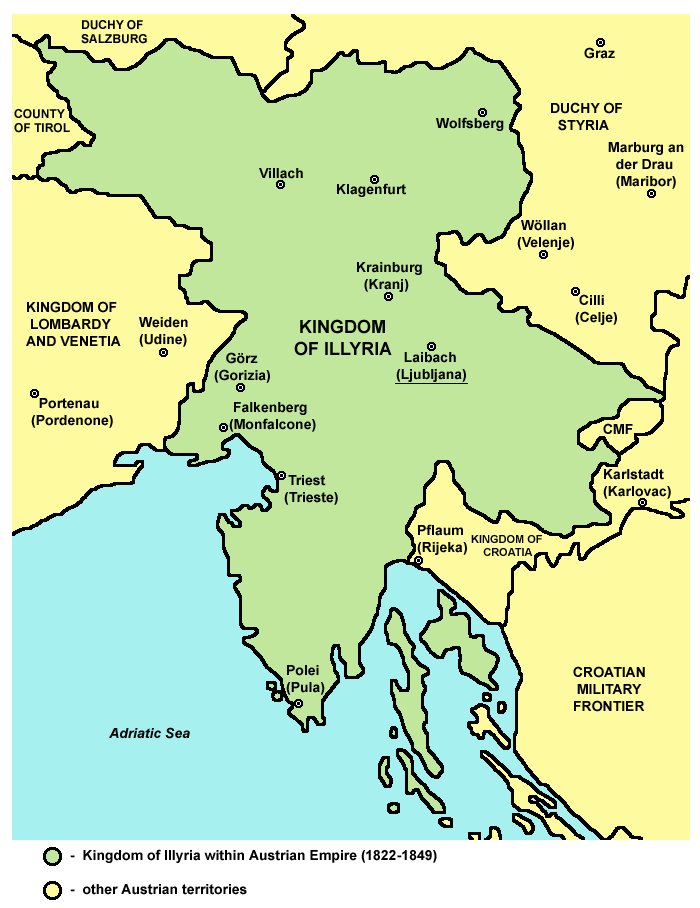

휴전 (8) - 대(大)외교관 메테르니히
게시: 2023-08-21T06:30:13+09:00
원래 러시아와 프로이센이 1813년 춘계 작전을 벌이면서 오스트리아의 참전을 애걸복걸할 때, 오스트리아는 짐짓 점잖은 척 하면서 뒷짐을 지고 있으면서 기묘한 요구를 했었습니다. 나폴레옹과 평화 협상을 할 때는 반드시 오스트리아의 중재를 통해서만 해야 한다는 것이었습니다. 러시아와 프로이센이 칼리쉬 조약을 맺고 반(反)나폴레옹 전쟁을 시작할 때 양국은 절대 개별적으로 나폴레옹과 협상을 벌이지 않는다는 조건이 있었습니다. 따라서 오스트리아라는 제3국을 중재국으로 두는 것은 러시아-프로이센 연합군으로서도 나쁜 일은 아니었으므로 그에 동의한 바 있었습니다. 이건 당대의 외교계의 거물이었던 메테르니히의 절묘한 한수였습니다. 그가 그런 독특한 요구를 관철시킨 것은 그가 프랑스 못지 않게 러시아를 견제해야 한다고 정확하게 판단했기 때문이었습니다. 이는 유럽은 프랑스 혼자서 좌지우지할 수 있는 대륙이 아니며 러시아와 양분하는 것이 맞다고 판단하여 1807년 틸지트 조약을 맺었던 나폴레옹과 같은 시각을 메테르니히가 가지고 있었다는 것을 보여줍니다. 메테르니히는 프랑스의 세력을 라인 강 엘베 강 서쪽으로, 러시아 세력을 폴란드 비스와 강 동쪽으로 제한하기를 원했습니다. 오스트리아가, 더 정확하게는 메테르니히가 가장 꺼려한 것은 프랑스와 러시아 둘이서 평화 협정을 맺고 1807년 틸지트 협정처럼 유럽을 양분하는 것이었습니다. 그 결과 나폴레옹은 최강의 장악력을 가지게 되었고 그로 인해 오스트리아는 완전히 고립되어 전력을 쏟아부었던 1809년 제5차 대불동맹전쟁에서 뼈아픈 패배를 겪어야 했습니다. 오스트리아의 기억 속에는 나폴레옹에 대한 증오 못지 않게, 그 전쟁에서 바로 국경 너머에서 오스트리아의 영토에 탐욕스러운 눈길을 던지던 러시아의 흉칙한 모습도 강렬하게 각인되었습니다. 한마디로, 오스트리아의 이익, 더 나아가 유럽의 평화를 위해서는 프랑스와 러시아가 서로를 견제하게 만들어야 했습니다. 그러기 위해서는 어느 한 쪽이 대승을 거두는 것도 막아야 했고 완전히 망하는 것도 막아야 했습니다. 그리고 그를 위해서는 나폴레옹과의 평화 교섭에서 오스트리아가 주도권을 쥐어야 했습니다. 메테르니히의 이런 큰 그림을 보지 못한 러시아와 프로이센은 그저 오스트리아의 병력을 전쟁에 끌어들이는데 급급하여 나폴레옹과의 평화 교섭에 대한 독점권을 오스트리아에게 준 것이었습니다. 그리고 메테르니히는 러시아를 견제하기 위해, 그 교섭권을 교묘히 활용하여 먼저 그 동맹들인 프로이센과 영국을 건드리기로 했습니다.

(나폴레옹이 군사적 대인물이라면, 메테르니히는 외교계에 있어서 나폴레옹에 필적하는 대인물이라고 할 수 있습니다. 그는 유럽 대혁명의 연도인 1848년에 오스트리아 총리직에서 물러날 때까지 소위 말하는 유럽의 협연(Le Concert européen) 또는 비엔나 체제(système du congrès de Vienne)를 확립하고 유지한 핵심 인물입니다. 외교관의 아들로 태어난 메테르니히는 나폴레옹보다 4살 연하로서, 지금은 오스트리아가 아니라 독일 땅인 라인란트-팔츠(Rheinland-Pfalz)의 코블랜츠(Koblenz) 출신입니다. 당시엔 신성 로마제국 소속이었지요. 그는 일찍부터 작센, 프로이센, 이어서 프랑스에 대사로 파견되었으며, 특히 1809년 외교부 장관이 된 이후 마리-루이즈가 나폴레옹의 황비로 간택되는데 결정적인 역할을 해냈습니다. 흔히 그를 나폴레옹의 철천지 원수처럼 묘사하지만, 실은 이때까지만 해도 나폴레옹을 대하는 그의 태도는 그렇게 적대적이지 않았습니다.)
러시아-프로이센의 군사 동맹인 칼리쉬 조약은 겉으로는 나폴레옹의 압제로부터 유럽을 해방시킨다는 거창한 것이었지만, 포장을 한 겹만 걷어내고 본다면 그냥 부동산 거래였습니다. 즉 과거 프로이센의 영토였던 바르샤바 공국을 러시아가 흡수하는 대신 그에 대한 보상으로 프로이센에게 작센 땅을 준다는 거래였지요. 거래의 산통을 깨는 방법은 간단했습니다. 어느 한 쪽이 이익을 못 보게 만들어놓으면 그 거래는 자연스럽게 꺠지는 것이었습니다. 그래서 메테르니히는 나폴레옹에게 제시할 평화 협정 조건에 라인 연방의 해체를 넣지 않은 것이었습니다. 라인 연방이 건재하다면 작센 땅을 먹겠다는 프로이센의 꿈은 저 멀리 날아갈 수 밖에 없었습니다. 그 꿈이 허물어진다면, 바르샤바 공국이 해체된다고 하더라도 그 땅 대부분의 예전 소유주였던 프로이센은 당연히 옛 소유권을 주장할 것이었고, 그러면 그 땅을 탐내고 있던 러시아와의 사이가 틀어질 수 밖에 없었습니다. 오스트리아로서는 그야말로 손 안 대고 코 푸는 격으로서, 마치 오스트리아가 바라는 것은 오로지 하나, 유럽의 평화 뿐이라는 우아한 태도를 유지하면서도 각 세력들의 평형을 이룰 수 있는 묘책이었습니다.

(바르샤바 공국의 연도별 국경선입니다. 보시다시피 바르샤바 공국의 영토는 1807년 프로이센이 점유하던 옛 폴란드 땅을 나폴레옹이 빼앗은 땅으로 이루어져 있습니다. 그러다 1809년 제4차 대불동맹전쟁에서 패배한 오스트리아가 쥐고 있던 옛 폴란드 땅까지 추가로 바르샤바 공국에 추가되었습니다. 나폴레옹 몰락 이후 대부분의 영토는 러시아가 가져갔고, 프로이센이 단치히(그단스크)를 포함한 북부 일부를 가져갔으며, 포즈난을 포함한 일부 영토는 포즈난 공국으로 프로이센의 자치령이 되었습니다. 명목상의 자치를 누리던 포즈난 공국은 그나마 1848년 폴란드 봉기가 실패로 돌아간 뒤 프로이센에 흡수 합병됩니다.)
그것만으로는 약간 부족하다고 판단한 메테르니히는 영국의 발목도 잡기로 합니다. 나폴레옹 전쟁의 화염에 휩싸인 유럽 대륙에서, 자신은 피 대신 황금을 뿌려가며 무대 뒤편에서 유럽의 외교 무대를 쥐락펴락하고 있다고 자부하던 영국은 당시 오스트리아의 속셈을 이해하지 못하고 있었습니다. 메테르니히는 지난 20여년 간 유럽이 전화에 휩싸인 원인 중 하나가 제해권과 그에 따른 통상권을 독점하려는 영국의 야욕이라고 파악하고 있었고, 그 점에 있어서도 나폴레옹과 견해가 비슷했습니다. 메테르니히는 나폴레옹에게 보낸 사절인 부브나(Ferdinand von Bubna) 장군을 통해서 자신의 그런 견해를 전달하는 것은 물론, 심지어 스타디온(Johann Philipp von Stadion) 백작을 통해서 영국과 동맹을 맺은 러시아-프로이센 연합군 사령부에도 영국이 제해권을 완전히 장악하는 것은 프랑스가 대륙에서의 절대권을 가지는 것과 동일하다면서 해양 통상에 있어서 영국이 양보하지 않는 한 평화는 어렵다고 설명했습니다. 그는 유럽 강국들에게 평화가 정착되어야 영국이 고립되며, 그래야 나폴레옹이 영국을 견제할 수 있다고 설명했습니다. 그러면서, 영국이 양보를 거절하면 유럽 대륙 국가들끼리만 협정을 맺자고 제의했습니다. 심지어 이 평화 협상에 대해 영국에게는 통보도 하지 말자고 설득하여 관철시켰습니다. 정말 의도적으로 영국을 배척한 것이었습니다. 이 모든 것이 오스트리아 뜻대로 가능했던 것은 1813년 6월, 오스트리아가 어느 편에 붙느냐에 따라 유럽 대륙의 운명이 결정되기 때문이었습니다. 메테르니히는 그런 상황을 십분 활용했습니다. 구체적으로, 메테르니히는 영국이 간절히 원하는 것에 초를 치기로 합니다. 바그람 전투에서 패배하고 나폴레옹에게 오스트리아 제국 유일한 해변인 일리리아 (지금의 크로아티아 일대)를 빼앗겨 내륙 국가가 되어버린 오스트리아가 어떻게 막강한 영국의 함대에게 도전할 수 있었을까요?

(1813년 평화 협상 때 오스트리아가 염치불구하고 나폴레옹에게 요구한 유일한 영토인 일리리아는 결국 1816년 이후 오스트리아 제국 산하의 일리리아 왕국이 됩니다. 사실상 오스트리아 영토였지요. 이후 유럽을 휩쓴 1848년 대혁명 때 여기서도 봉기가 일어났는데, 그게 실패로 끝난 이후 3개의 왕국지로 분할되어 계속 오스트리아의 통치를 받았습니다.)
메테르니히는 의도적으로 네덜란드와 스페인, 포르투갈, 그리고 뮈라의 나폴리 왕국 및 나폴레옹 본인이 국왕을 겸직하고 있던 이탈리아 왕국에 대한 조항을 평화 협정의 선결 조건에서 뺴버렸습니다. 이건 이 지역에 긴밀한 이해 관계를 가지고 있던 영국을 엿먹이는 것이었습니다. 영국은 당연히 네덜란드와 벨기에, 이베리아 반도, 이탈리아에서도 나폴레옹이 완전히 물러나는 것을 원했거든요. 메테르니히가 노골적으로 영국을 배척한다는 것은 이런 사전 조율 및 협의에 있어서 영국을 의도적으로 배제했다는 것에서 여실히 드러났습니다. 여태까지 러시아-프로이센 연합군 사령부에 스튜어트와 캐쓰카트를 파견하여 상황을 면밀히 감시하며 연합군의 작전을 장악하고 있다고 생각하던 영국에게, 러시아-프로이센이 오스트리아와 나폴레옹과의 평화 협정을 논의하면서 자신들에게는 아무런 통보를 하지 않았다는 사실은 큰 충격이었습니다. 나폴레옹 전쟁이라는 거대한 도박판에서 큰 그림을 그리고 있다고 스스로 생각하던 영국은 알고보니 자신이 돈만 대는 어리숙한 호구였다는 것을 깨닫게 된 것은 바로 이때였습니다. 다음 편에서는 영국의 입장을 한번 보시겠습니다. Source : The Life of Napoleon Bonaparte, by William Milligan Sloane Napoleon and the Struggle for Germany, by Leggiere, Michael V https://en.wikipedia.org/wiki/Klemens_von_Metternich https://alchetron.com/Duchy-of-Warsaw